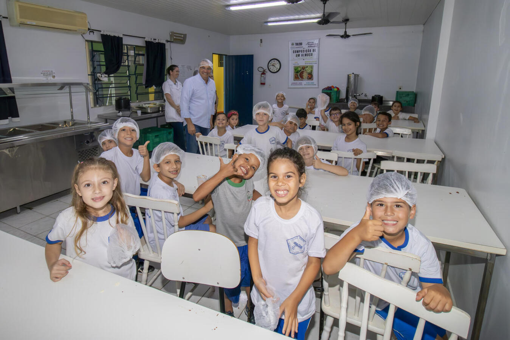
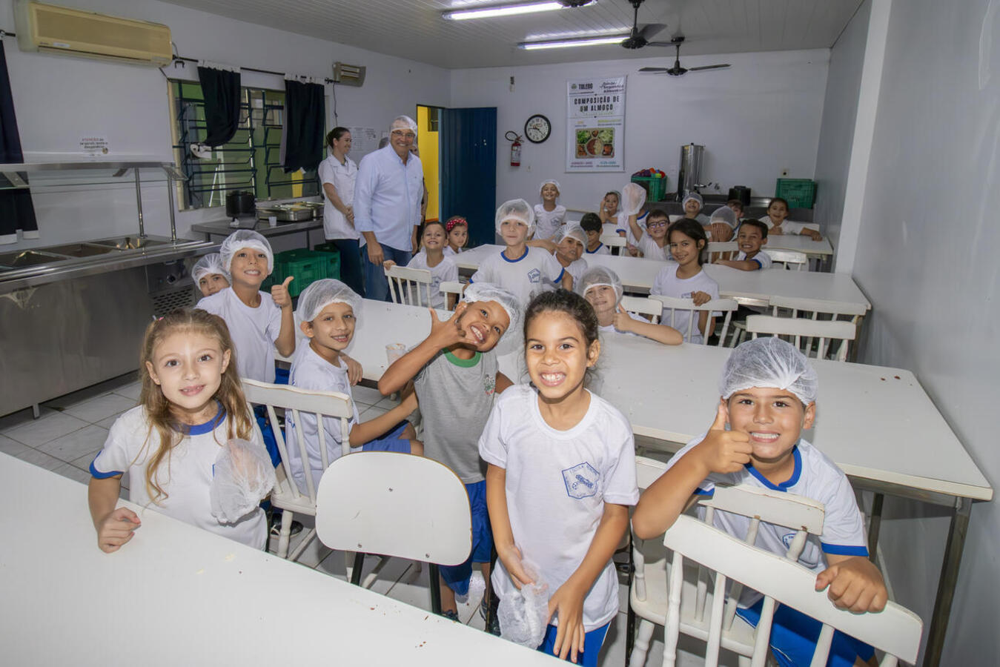

ㅤㅤㅤㅤㅤㅤㅤㅤㅤㅤ
EDUCAÇÃO ALIMENTAR
Educação Alimentar e Nutricional
A Educação Alimentar e Nutricional (EAN) é desenvolvida pelos nutricionistas da Unidade Central de Produção de Alimentos como objetivo de fazer com que a população adote práticas autônoma e voluntárias de hábitos alimentares saudáveis.
Diversas atividades tem sido desenvolvidas na área da EAN, todas buscando atender a algum público que rotineiramente acessa os programas ofertados pela Unidade Central de Produção de Alimentos como, por exemplo: - Avaliação e orientação Nutricional nos Restaurantes Populares; - Oficina de culinária; - Ações educativas nas escolas municipais; - Palestras com orientações para PROJOVEM e CJU; - Palestras para o público idoso; - Projeto “Florir + Saúde”; - Projeto Visita na Cozinha;
Quem pode acessar?
A Educação Alimentar e Nutricional (EAN) é desenvolvida pelos nutricionistas da Unidade Central de Produção de Alimentos como objetivo de fazer com que a população adote práticas autônoma e voluntárias de hábitos alimentares saudáveis.
Galeria


 
